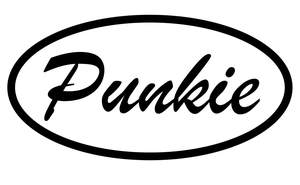

Trade Mark Journal No.2025/019 9 May 2025
UK00004165220 25 February 2025 (18,25)

- Class 18
- Tote bags; Duffel bags; Duffle bags; Bags; Carry-all bags; Drawstring bags; Cross-body bags; Crossbody bags; Carry-on bags; Sling bags; Toiletry bags; Duffel bags for travel; Shoulder bags; Bucket bags; Belt bags and hip bags; Clutch bags; Carrying bags; Kit bags; Shoe bags; Cloth bags; Belt bags; Messenger bags; Leather bags; Canvas bags; Umbrella bags; Garment bags; Mesh shopping bags; Leather shopping bags; Souvenir bags; Canvas shopping bags; Waterproof bags; Toilet bags; Make-up bags; Makeup bags; Attaché bags; Hand bags; Bags [envelopes, pouches] of leather, for packaging; Bags [envelopes, pouches] for packaging of leather; Bags [envelopes, pouches] of leather for packaging; Bum bags; Suit bags; Bags for clothes; Overnight bags; Courier bags; Gym bags; Book bags; Leather bags and wallets; Roll bags; Nose bags; Wheeled bags; Tool bags, empty; String bags for shopping; Shoe bags for travel; Travel bags; Bags for travel; Waist bags; Barrel bags; Boot bags; Gladstone bags; Camping bags; Cosmetic bags; All-purpose carrying bags; Towelling bags; Backpacks; Backpacks [rucksacks]; Hiking bags; Small backpacks; Handbag straps; Luggage bags; Daypacks; Carry-on suitcases; Straps for suitcases; Wash bags for carrying toiletries; Straps for luggage; Luggage straps; Small rucksacks; Bags for campers; Knapsacks; Hunting bags; Suitcases; Satchels (School -); School satchels; Luggage.
- Class 25
- Clothing; Knitwear [clothing]; Jackets [clothing]; Ready-to-wear clothing; Woolen clothing; Furs [clothing]; Clothing layettes; Linen clothing; Headbands [clothing]; Headbands for clothing; Gloves [clothing]; Gloves as clothing; Clothes; Kerchiefs [clothing]; Jerseys [clothing]; Shorts [clothing]; Denims [clothing]; Cashmere clothing; Capes (clothing); Gabardines [clothing]; Leather clothing; Clothing of leather; Leather (Clothing of -); Silk clothing; Collars [clothing]; Knitted clothing; Windproof clothing; Hoods [clothing]; Corsets [clothing, foundation garments]; Embroidered clothing; Wristbands [clothing]; Belts [clothing]; Belts for clothing; Bandeaux [clothing]; Rainproof clothing; Casual clothing; Waterproof clothing; Jackets being sports clothing; Jackets (Stuff -) [clothing]; Stuff jackets [clothing]; Bottoms [clothing]; Playsuits [clothing]; Clothing for leisure wear; Ready-made clothing; Trunks being clothing; Woven clothing; Leisure clothing; Ties [clothing]; Drawers [clothing]; Drawers as clothing; Clothing for sports; Sports clothing; Athletic clothing; Muffs [clothing]; Tops [clothing]; Pockets for clothing; Fabric belts [clothing]; Handwarmers [clothing]; Beach clothing; Clothing for skiing; Thermal clothing; Chaps (clothing); Cowls [clothing]; Men's clothing; Mitts [clothing]; Braces for clothing; Plush clothing; Hats; Beanie hats; Toques [hats]; Bobble hats; Fascinator hats; Cloche hats; Mitres [hats]; Fur hats; Woolly hats; Baseball hats; Fashion hats; Miters [hats]; Bucket hats; Baseball caps and hats; Sports caps and hats; Rain hats; Sun hats; Top hats; Ski hats; Beach hats; Ushankas [fur hats]; Small hats; Fake fur hats; Bonnets [headwear]; Beanies; Fedoras; Caps [headwear]; Caps being headwear; Scarves; Scarfs; Bandanas [neckerchiefs]; Boas [clothing]; Bandannas; Bandanas; Bonnets; Headwear; Head scarves; Shawls and headscarves; Headbands; Knitted caps; Waistcoats [vests]; Berets; Caps with visors; Fur coats and jackets; Sweaters; Knitted gloves; Fur jackets; Shirts; Kerchiefs; Cashmere scarves; Knit shirts; Shawls; Fezzes; Jumpers [sweaters]; Silk scarves; T-shirts; Short-sleeved T-shirts; Printed t-shirts; Tee-shirts; Turtleneck shirts; Long-sleeved shirts; Short-sleeved shirts; Short-sleeve shirts; Dress shirts; Open-necked shirts; Mock turtleneck shirts; Corduroy shirts; Bib shorts; Casual shirts; Sweat shirts; Hooded sweat shirts; Collared shirts; Button-front aloha shirts; Polo shirts; Sweatshirts; Yoga shirts; Aloha shirts; Woven shirts; Sleeveless jerseys; Sweatpants; Shirt yokes; Yokes (Shirt -); Shirts and slips; Night shirts; Football shirts; Soccer shirts; Fleece shorts; Shirt fronts; Shirts for suits; Jeans; Pique shirts; V-neck sweaters; Sports shirts; Tennis shirts; Ramie shirts; Denim pants; Hoodies; Hooded sweatshirts; Under shirts; Denim jeans; Rugby shirts; Sports shirts with short sleeves; Shorts; Trousers shorts; Dress pants; Blue jeans; Sleeveless jackets; Tank-tops; Sleeveless pullovers; Turtleneck sweaters; Button down shirts; Men's dress socks; Sweatshorts; Turtleneck pullovers; Sleeved jackets; Mock turtleneck sweaters; Pants; Corduroy pants; American football shirts; Denim jackets; Sweat pants; Swim shorts; Wristbands; Warm-up pants; Capri pants; Underwear; Quilted jackets [clothing]; Shoes for casual wear; Undershirts; Polo sweaters; Turtleneck tops; Knit jackets; Boxer shorts; Dress suits; Dress shoes; Pinafore dresses; Dresses; Dresses for evening wear; Wedding dresses; Cocktail dresses; Skirt suits; Jumper dresses; Dressing gowns; Leather dresses; Evening dresses; Shift dresses; Collars for dresses; Romper suits; Tennis dresses; Pleated skirts for formal kimonos (hakama); Women's ceremonial dresses; Frock coats; Gowns; Imitation leather dresses; Formal wear; Sashes for wear; Ladies' dresses; Bathing costumes; Bodices [lingerie]; Formal evening wear; Ladies wear; Leggings [trousers]; Breeches for wear; Bridal garters; Cheongsams (Chinese gowns); Bathing costumes for women; Casual wear; Strapless bras; Evening gowns; Gussets for bathing suits [parts of clothing]; Skating outfits; Sash bands for kimono (obi); Blouses; Dance clothing; Culotte skirts; Bra straps [parts of clothing]; Strapless brassieres; Casual trousers; Jogging outfits; Dinner suits; Ballet suits; Night gowns; Camouflage shirts; Sport shirts; Sleep shirts; Trousers; Camouflage pants; Corduroy trousers; Chino pants; Bib tights; Trouser socks; Sweat shorts; Trousers for sweating; Pirate pants; Slacks; Snowboard trousers; Khakis; Leather pants; Rugby shorts; Vest tops; Polo knit tops; Overalls; Tracksuit tops; Tracksuit bottoms; Jogging pants; Cycling pants; Short overcoat for kimono (haori); Golf shorts; Trousers of leather; Jacket liners; Blouson jackets; Jackets; Windproof jackets; Fleece jackets; Suede jackets; Leather jackets; Rainproof jackets; Bomber jackets; Waterproof jackets; Men's and women's jackets, coats, trousers, vests; Camouflage jackets; Sheepskin jackets; Motorcycle jackets; Wind-resistant jackets; Weatherproof jackets; Shell jackets; Padded jackets; Snowboard jackets; Reversible jackets; Ski jackets; Rain jackets; Casual jackets; Riding jackets; Sweat jackets; Warm-up jackets; Polar fleece jackets; Waterproof trousers; Dinner jackets; Wind jackets; Hunting jackets; Heavy jackets; Bed jackets; Waterproof pants; Light-reflecting jackets; Smoking jackets; Safari jackets; Down jackets; Track jackets; Donkey jackets; Weatherproof pants; Fleece vests; Sports jackets; Korean outer jackets worn over basic garment [Magoja]; Stuff jackets; Ski trousers; Rain trousers; Long jackets; Quilted vests; Wind resistant jackets; Ski pants; Outerwear; Coats of denim; Denim coats; Camouflage vests; Duffle coats; Wind-resistant vests; Leather suits; Suits of leather; Snow pants; Camouflage gloves; Leather waistcoats; Leather coats; Wind pants; Duffel coats; Leather belts [clothing]; Water-resistant clothing; Waterproof boots; Suit coats; Shoes; Insoles [for shoes and boots]; Insoles for shoes and boots; High-heeled shoes; Wooden shoes [footwear]; Sneakers [footwear]; Slip-on shoes; Leather shoes; Tongues for shoes and boots; Jogging shoes; Tennis shoes; Ballet shoes; Esparto shoes or sandals; Walking shoes; Rubber shoes; Hiking shoes; Pullstraps for shoes and boots; Esparto shoes or sandles; Basketball shoes; Athletic shoes; Running shoes; Volleyball shoes; Sandals and beach shoes; Soccer shoes; Sneakers; Waterproof shoes; Shoe soles; Dance shoes; Snowboard shoes; Canvas shoes; Shoes for foot volleyball; Foot volleyball shoes; Cycling shoes; Shoes for leisurewear; Sports shoes; Wooden shoes; Platform shoes; Athletics shoes; Sport shoes; Yoga shoes; Roller shoes; Baseball shoes; Insoles for footwear; Bowling shoes; Riding shoes; Rain shoes; Football shoes; Gymnastic shoes; Boxing shoes; Aqua shoes; Training shoes; Handball shoes; Skiing shoes; Beach shoes; Flat shoes; Leisure shoes; Shoes for infants; Stiffeners for shoes; Rugby shoes; Footwear; Women's shoes; Work shoes; Flip-flops for use as footwear; Tap shoes; Hidden heel shoes; Apres-ski shoes; Deck shoes; Pumps [footwear]; Sandals; Boots; Trainers [footwear]; Shoe straps; Inner socks for footwear; Rubbers [footwear]; Wedge sneakers; Shoe uppers; Basketball sneakers.
Eleanor Wilkinson